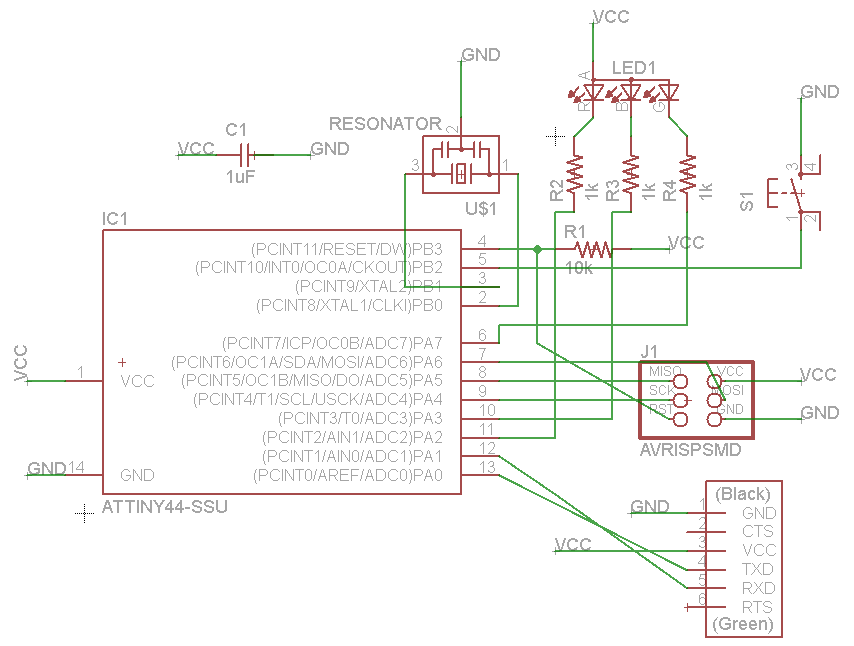
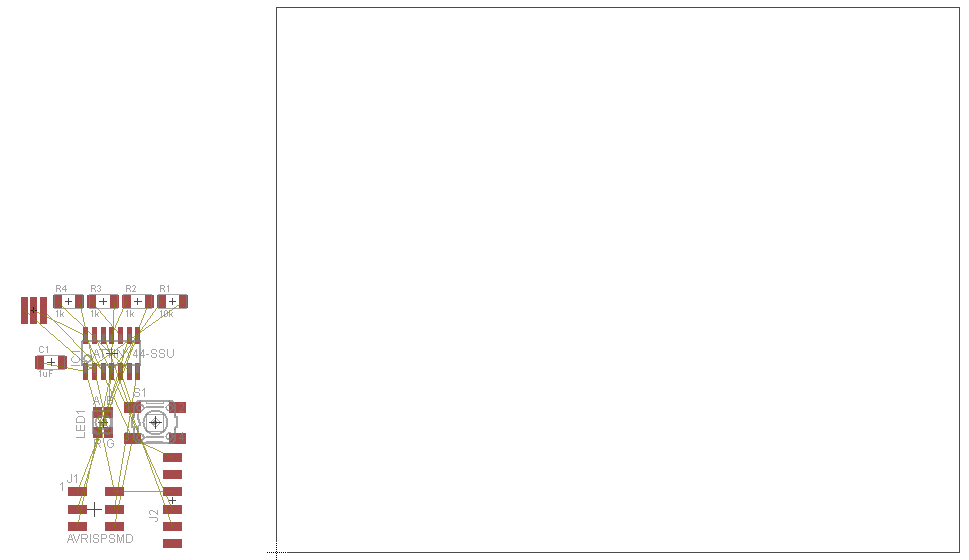
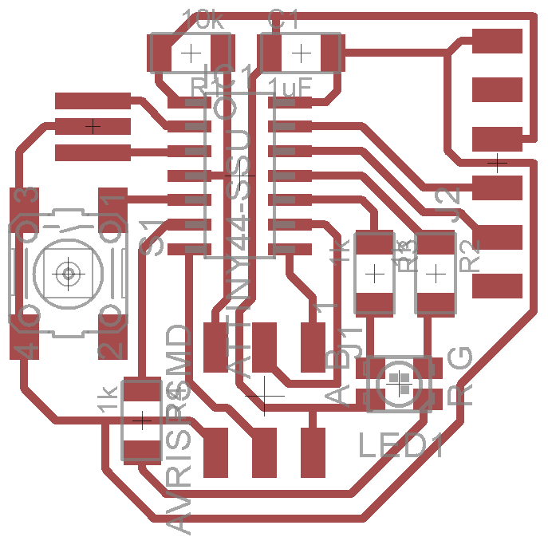
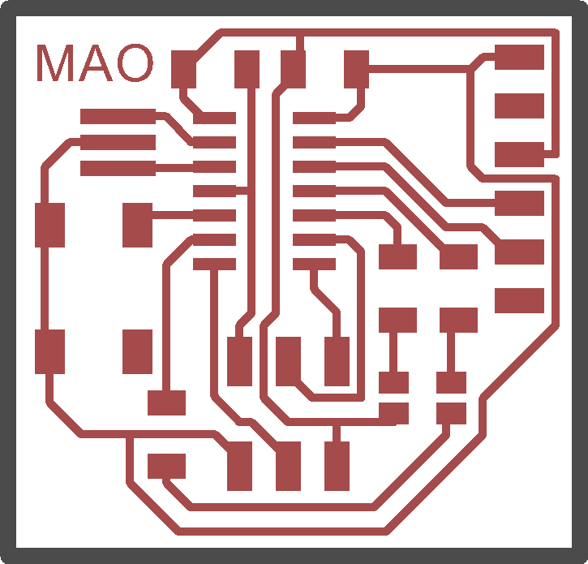
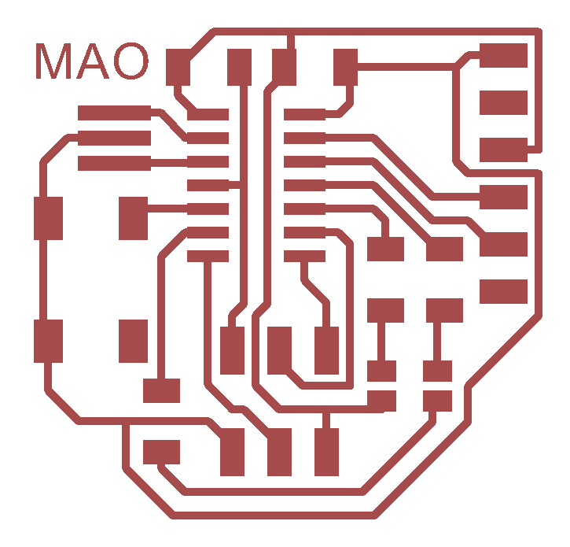
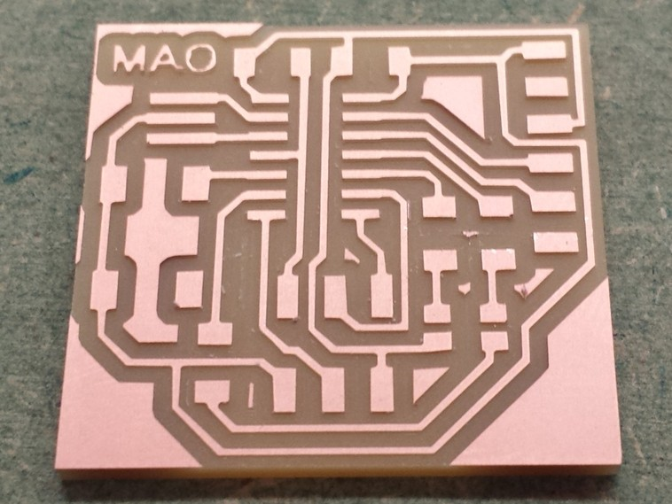
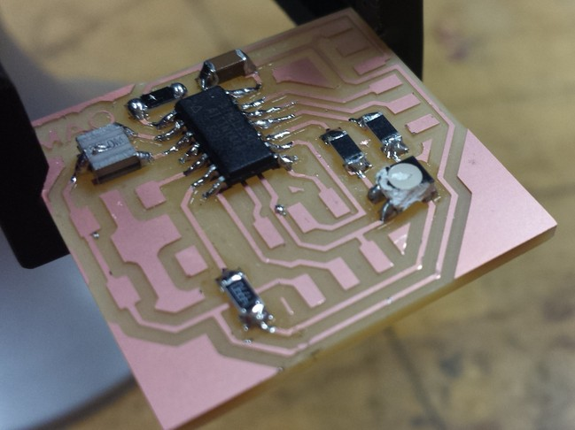
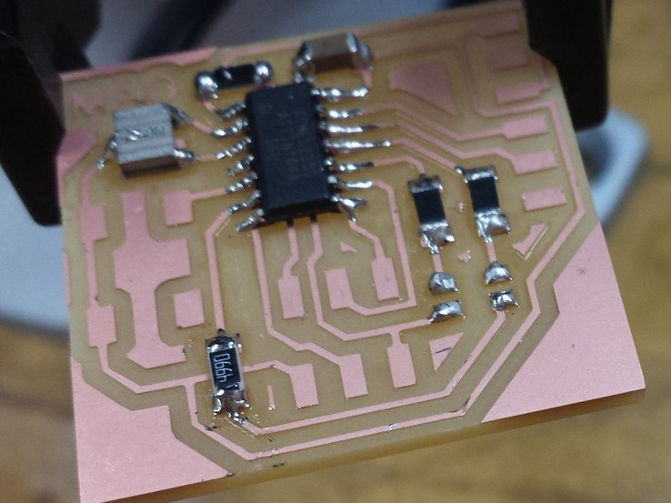
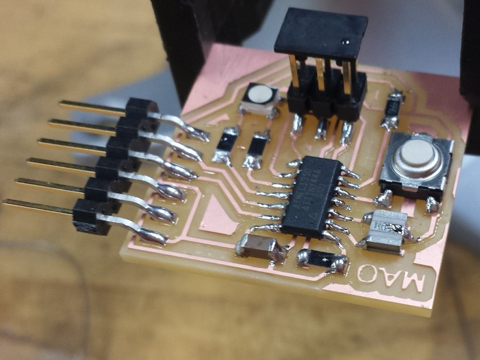

Week 5: PCB Design
This week’s assignment is to learn how to design and fabricate a PCB from start to finish using Eagle and the skills we learned a couple of weeks ago.
The interesting thing I noted right off the bat is that Eagle produces XML files in a plain text format. This means that electronic circuits can be shared in an open source way, and in fact Sparkfun is a company that shares a lot of their software via GitHub. I share code via GitHub all the time, but found it very cool to be able to share hardware designs as well.
Eagle produces boards in two steps: first with a schematic, then with routing. The schematic portion basically involves picking parts off of a library and connecting them together. The library has basically done most the work here: it has both the semantic and physical representation of a part.
Our task this week is to edit the echo hello-world board with a
button and an LED. I noticed that there were 4 unused pins in the
default design, and that we had a tricolor LED. So I wired up a
schematic to control the 3 LED colors, and connect to the button.
A big timesaver is the use of named nets to connect pins in the
circuit. For example in the picture below all nets named VCC are
connected even though there is no wire between them. This makes it a
lot easier to avoid a mess of common bus connections.

Note that each LED has its own resistor. This is necessary for a number of reasons, including being able to control the brightness of the LEDs independently, and compensating for their different levels of brightness at the same level of current. In this case there is also only one possible arrangement of the LEDs, because they have a common anode: the microcontroller has to sink current.
Always double check the parts in the library with the actual stocked parts! In my case, the LED did not have the same pins as the library part, although the anode was in the same place. So the resistors for the different colors will be soldered in different places.
After completing the schematic, we can move to the board phase. Eagle basically dumps all of the components on the board in a big mess which we need to move, rotate, and clean up. At this point the pins that need to be connected are denoted with the gold airwires, which disappear as actual traces are drawn.

Given that I had three extra LEDs and a button to route, I thought I was going to be screwed for sure. But it turns out that every extra resistor and component is an opportunity for wires to cross each other, and it only took a minor amount of messing around to figure out a configuration that worked. The routed schematic is shown in the following figure:

If you’re using the Cree PLCC4 3-in-1 SMD LED CLV1A-FKB, note the
R and B pins are actually switched from the diagram above. It
doesn’t really matter for the purposes of this schematic if you just
solder with the right resistors, but the “right” way to do things
would be to edit the library.
The final task with the board is to draw an outline which will
dimension its size. In Eagle, this simply means drawing a wire on the
Dimension layer (Layer 20). I drew a wire with a thickness of 0.032
in (1/32), which is the size of the end mill that we use to cut out
the PCB. I also wrote my name on the board for easier recognition.

The final step is to export the board at a high enough resolution (600 DPI seems to be sufficient) and create separate images for the traces and interior so that they can be milled out on the MDX-20.


Using week 2 skills, this is turned into a physical object in pretty short order. I know this is what this class is all about, but as someone who usually works with software I’m continually surprised by how I can turn things I’ve designed on my computer into real, physical objects!

Time for some more surface mount follies. While trying to use the copper wick to remove excess solder, I appear to have jammed the soldering iron into the LED and melted it pretty good. It has 4 pins; how can I get it off?

It’s heatgun desoldering to the rescue! If you haven’t learned of this by now, it basically involves holding the board by the part to be desoldered, and aiming a heatgun at it. This causes all of the joints to melt simultaneously, and the board just falls away. Here’s the result:

I’ve finally managed to get all the parts on to the board without incident. However, the FTDI connector is just hanging off the board. This is probably why it’s a good idea to check physical components before doing the routing: it would be much more stable if it was resting on the board. In my attempts to save space, I didn’t account for the physical layout of this part at all. Living and learning - that’s what this class is all about!
